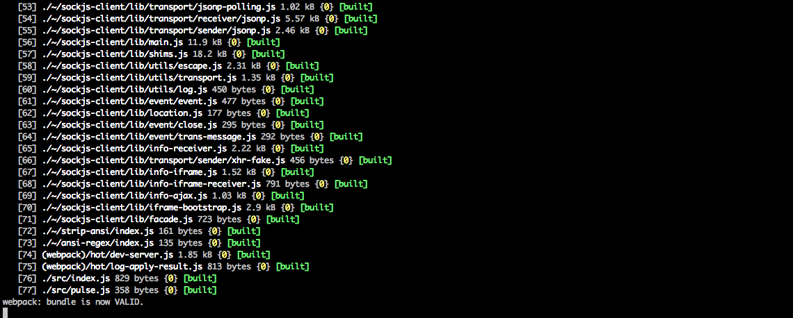
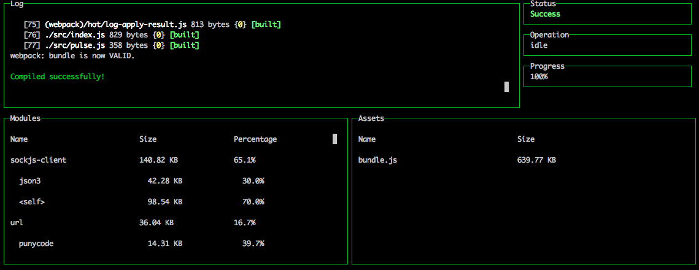

"webpack HMR is a feature to inject updated modules into the active runtime."
webpack in action
{
...
"devDependencies": {
"webpack": "^1.13.1",
"webpack-dev-server": "^1.14.1"
}
}
{
...
"devDependencies": {
"babel-core": "^6.10.4",
"babel-loader": "^6.2.4",
"babel-preset-es2015": "^6.9.0",
"css-loader": "^0.24.0",
"file-loader": "^0.9.0",
"style-loader": "^0.13.1",
"url-loader": "^0.5.7",
"webpack": "^1.13.1",
"webpack-dashboard": "^0.1.8",
"webpack-dev-server": "^1.14.1"
}
}
const webpack = require('webpack');
module.exports = {
entry: './src/index.js',
output: {
path: 'builds/',
publicPath: 'http://localhost:9000/builds/',
filename: 'bundle.js'
},
devServer: {
progress: true,
colors: true,
port: 9000
},
module: {
loaders: [
{
test: /.js$/,
loader: 'babel',
exclude: /node_modules/,
query: {
// Needed to find presets in linked modules
// http://stackoverflow.com/questions/34574403/how-to-set-resolve-for-babel-loader-presets/
presets: ['babel-preset-es2015'].map(require.resolve)
}
}
]
}
};


if (module.hot) {
module.hot.accept();
}
// Some operation with a side-effect (like adding a DOM element)
if (module.hot) {
module.hot.dispose(() => {
// Undo side effect, if possible
});
}
// Initialize module state (cannot use const)
let state = {
count: 0
};
if (module.hot) {
// Re-assign state based on module data
const data = module.hot.data || {};
state = data.state || state;
module.hot.dispose((data) => {
// Store our retained data here so the next iteration of our module can access it
data.state = state;
});
}
import * as library from 'some-module';
library.invoke();
if (module.hot) {
// I am not HMR safe
module.hot.decline();
// My dependency is not HMR safe
module.hot.decline('some-module');
}